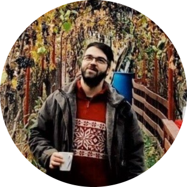

|  |
Corfu Alin ConstantinI am currently a research assistant in the 3rd year of my PhD in Philosophy at the Department of Ancient and Medieval Philosophy in Cluj-Napoca. In addition to my research activity in the last year, first as a hobby, then as an aspirant, I started to build projects in Java, SpringBoot, but after some thought the Frontend part seemed more natural so at the present I am working in Html, CSS and Java Script. Info about my projects: GitHub Full version of my Cv 📑. |
| Dates | Places |
|---|---|
| 2017-2018 | Librarian at Carturesti Verona - Bucharest (10 months) |
| 2021- 2022 | Research Assistant at ,,Babes Bolyai” University - Cluj Napoca (6 months) |
| In the project PN-III-P4-ID-PCCF-2016-0064 with the title | |
| “Nașterea elitei intelectuale în Europa Centrală. | |
| Formarea profesorilor la Universitatea dinViena (1389-1450)” |
| Dates | Education |
|---|---|
| 2009-2013 | High School - National College ,,Calistrat Hogaș” "European School - Piatra Neamț |
| 2013-2014 | Faculty - Engineering and Management in Public Food and Agrotourism - USAMV – Bucharest |
| 2014-2017 | Faculty – Ba. in Philosophy - ,,Babes Bolyai” University - Cluj Napoca |
| 2017-2019 | Faculty – Ma. in Philosophy - ,,Babes Bolyai” University - Cluj Napoca |
| 2019-2022 | Faculty – Phd. in Philosophy - ,,Babes Bolyai” University - Cluj Napoca - (expected) |
| Programming Languages | Java, Html, CSS, Java Script |
| Technologies | Spring Framework, Spring Boot, Maven, Swagger, JUnit5, Postman. |
| Development | Intellij IDEA, Postgres |
| Operating Systems | Windows |